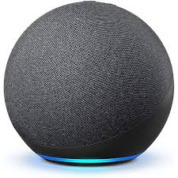
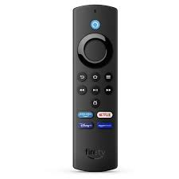

Nosso Produto

Transforme sua casa com o IntelliVoice, o assistente virtual inteligente que facilita sua vida. Com tecnologia avançada de reconhecimento de voz e aprendizado de máquina, ele está sempre pronto para ajudar.
Assistência Pessoal: Organize compromissos, lembretes e listas de tarefas com comandos de voz.
Controle da Casa Inteligente: Controle luzes, termostatos e câmeras de segurança facilmente.
Entretenimento: Acesse músicas, podcasts, audiolivros e mais.
Informações Instantâneas: Receba notícias, previsão do tempo e resultados esportivos.
Privacidade e Segurança: Múltiplas camadas de segurança para proteger sua privacidade.
Aprendizado e Adaptação: Personaliza-se aos seus hábitos e preferências.

Apresentamos o SmartControl Pro, o controle remoto universal inteligente que leva a conveniência e o entretenimento ao próximo nível. Projetado para ser o centro de comando de todos os seus dispositivos, o SmartControl Pro oferece funcionalidade avançada e uma experiência de usuário intuitiva.
Controle Universal: Compatível com TVs, sistemas de som, aparelhos de streaming e mais, permitindo que você controle todos os seus dispositivos com um único controle remoto.
Comando de Voz Integrado: Com tecnologia de reconhecimento de voz avançada, você pode procurar filmes, ajustar o volume e controlar seus dispositivos inteligentes usando apenas sua voz.
Botões Personalizáveis: Programe botões específicos para acessar rapidamente suas funções e aplicativos favoritos.
Design Ergonômico: Leve e confortável de segurar, o SmartControl Pro é fácil de usar e fica bem em qualquer sala de estar.
Retroiluminação Automática: Teclas retroiluminadas que se acendem automaticamente em ambientes escuros, facilitando o uso à noite.